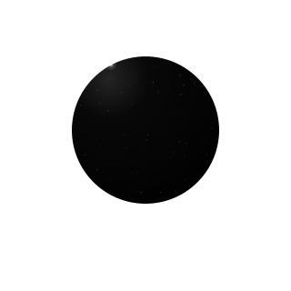

BLACK. WHITE. IN MOTION.
A language of light.
Twenty-one identities. One visual system.
Explore the forms before they enter the workspace.
01 / EXPERIENCE
Threshold
An eclipse rising above a field of light.
Intro20 / 28 / 40 PX


01 / 21
PROCEDURAL LIGHT / VECTOR GEOMETRY

TRANSITION STUDIES
Motion and activity are illustrative. This preview has no connection to the NTOX runtime. Reduced-motion preferences are respected.
THE COMPLETE COLLECTION
Choose a form.
No matching glyphs. Try another name or category.